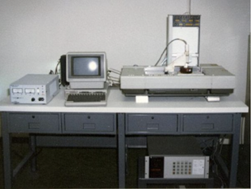
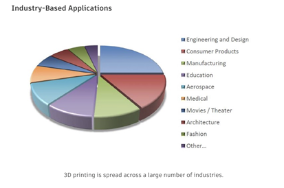

3D printing is a very curious kind of technology. 3D printing uses materials to convert a 3D model or sketch into a 3D object. 3D printing is not one kind of technology, but it’s an umbrella of similar technologies that can be described using the same term. 3D printing has been thought to be a very recent phenomenon. This isn’t true. The concept of 3D printing has existed for a very long time. In science fiction stories from the 40s and 50s, they already had concepts similar to 3D printing. Murray Leinster, in 1945 had an idea for a machine that used melted plastic to form 3D objects from drawing.
The first known idea for 3D printing came in the 70s.In 1971, a patent was created by Johannes F Gottwald for a “Liquid Metal Recorder”, a device that could “print” designs on alloys. It did not use liquid ink, but “any flowable substance or composition suited for application to the surface for forming symbols, characters, or patterns of intelligence by marking”. While this device was never produced in the end, it shows that people had an idea of what the future could look like as early as the 70s.
The earliest record of 3D printing through the additive process was the Japanese inventor Hideo Kodama in 1981. However, he never got to successfully patent this idea, and this idea was never commercialized. This idea was also followed by a trio of French inventors, Jean-Claude André, Olivier de Witte, and Alain le Méhauté, in 1984. However, they were unable to get their financiers on board with the idea, and thus never got to patent it.
In the U.S, Bill Masters filed a patent for similar technologies, but ultimately abandoned it. Charles “Chuck” Hull was the first to successfully sell the idea of 3D printing, with the stereolithography system. This process used UV lamps to cure a photosensitive resin layer by layer to create small custom parts. He was able to produce a working 3D printer, the SLA-1, in 1988. Chuck also created the standard of the STL file format and digital slicing process.
Other forms of 3D printing such as fused deposition modeling, or FMD, and the SLS, Selective laser sintering, were created during this time. The FDM was patented by Scott Crump, a co-founder of Stratasys, in 1988, but it took until 1992 to be approved. Once it was, he was quick to sell his inventions. Carl Deckard invented SLS, but was heavily limited by the technology of his time.
At around this time, MIT professor Emanuel Sachs coined the term “3D Printing”, which meant that the concept known at the time as “Rapid Prototyping” now had a new name.
So 3D printers are not recent; what is recent is the cheap implementation of it. Afterall, a form of 3D Printing existed in the 80s, but the cost to buy a 3D printer was expensive, and the materials needed were not widely accessible to many companies. There were also patents in place that prevented widescape production of such materials. Designing models for 3D printing was also hard, as CAD, or computer assisted design, was not widespread until the 2000s. It’s thanks to software such as AutoCAD and MicroStation that many 3D printed designs were created. But with all the circumstances lining up, it was in the 2010s that 3D printing boomed.
3D printing boomed for a multitude of reasons. As mentioned before, software for designing models and patents for creating 3D printers expired. The RepRap Project, which was already making an open source 3D printer in 2005, was a key part of the 3D Printing community. In 2006, when many of the 3D printing patents expired, more and more companies started becoming acquainted with the idea. As patents expired, so did prices, so more commercially produced 3D printers hit the scene.
Another reason was politics. See, Barack Obama mentioned it in his State of the Union speech in 2013. This caused the concept to become more widely known. Companies big and small started investing in the technology, and more and more concepts were able to be produced. Before, 3D printing was mostly used in the medical industry, to help create prosthetics and other kinds of replacement body parts. But now cars, houses, and even food were being 3D printed. This is all thanks to another of the new circumstances. Materials. Before, materials used in 3D printing were liquids, powders, and resins. But now metals, carbon fiber, glass fiber, and even “bio-ink” are used in 3D printers. Bio-ink has been used for human tissue, and potentially, it can even print human organs for transplants!
The impact of 3D Printing Technology on the Society and Economy
Since 1984, when the first 3D printer was designed and realized by Charles W. Hull from 3D Systems Corp., the technology has evolved and these machines have become more and more useful, while their price points have lowered, thus becoming more affordable.

The first 3D printer ever created was made in 1983 by Chuck Hull.
Nowadays, rapid prototyping has a wide range of applications in various fields of human activity: research, engineering, medical industry, military, construction, architecture, fashion, education, computer industry and many others.

How 3D Printing Works
The 3D printing technology consists of three main phases - the modeling, the printing and the finishing of the product:
In the modeling phase, in order to obtain the printing model, the machine uses virtual blueprints of the object and processes them in a series of thin cross-sections that are being used successively. The virtual model is identical to the physical one.
In the printing phase, the 3D printer reads the design (consisting of cross-sections)and deposits the layers of material, in order to build the product. Each layer, based on a virtual cross section, fuses with the previous ones and, finally, after printing all these layers, the desired object has been obtained. Through this technique, one can create different objects of various shapes, built from a variety of materials(thermoplastic, metal, powder, ceramic, paper, photopolymer, liquid).
The final phase consists in the finishing of the product. In many cases, in order to obtain an increased precision, it is more advantageous to print the object at a higher size than the final desired one, using a standard resolution and to remove the supplementary material using a subtractive process at a higher resolution.
[Footnote]
References
3DInsider. (n.d). A Detailed History of 3D Printing. Retrieved from https://3dinsider.com/3d-printing-history/
How 'disruptive technology' can lead to societal impact. (2021). ASU News. https://news.asu.edu/20210316-solutions-how-disruptive-innovation-can-lead-societal-impact
Alexandra. (2022, September 13). When was 3D printing invented? the history of 3D printing -. BCN3D Technologies. Retrieved December 13, 2022, from https://www.bcn3d.com/the-history-of-3d-printing-when-was-3d-printing-invented/
Carmel. (2021, May 6). The history of 3D printing: From the 80s to Today. Sculpteo. Retrieved December 13, 2022, from https://www.sculpteo.com/en/3d-learning-hub/basics-of-3d-printing/the-history-of-3d-printing/
Chapman, A. (n.d.). The Complete History of 3D printing. https://ultimaker.com. Retrieved December 13, 2022, from https://ultimaker.com/learn/history-of-3d-printing
González, C. M. (n.d.). Timeline of the 3D printing history. ASME. Retrieved December 13, 2022, from https://www.asme.org/topics-resources/content/infographic-the-history-of-3d-printing
Haines, J. (2022, April 29). History of 3D printing: When was 3D printing invented? All3DP. Retrieved December 13, 2022, from https://all3dp.com/2/history-of-3d-printing-when-was-3d-printing-invented/
Schain, S. (n.d). Real-World Applications of 3D Printing. Retrieved from https://www.autodesk.com/autodesk-university/article/Real-World-Applications-3D-Printing
Turney, D. (2022, November 4). History of 3D printing: It's older than you think. History of 3D Printing: It's Older Than You Think [Updated]. Retrieved December 13, 2022, from https://redshift.autodesk.com/articles/history-of-3d-printing
Vice News. (2020). 3D Printing Is Changing the World. Retrieved from https://www.youtube.com/watch?v=vL2KoMNzGTo
Yan, Q., Dong, H., Su, J., Han, J., Song, B., Wei, Q., & Shi, Y. (2018). A review of 3D printing technology for medical applications. Engineering, 4(5), 729-742.